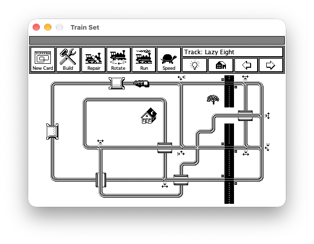

HyperCardスタック
Train SetをHyperZebraで開く
Train Setは、線路や列車を扱うHyperCardスタックです。HyperZebraに読み込んだ画面には、モノクロの線路と列車、Build・Repair・Rotate・Run・Speedなどのボタンが並んでいます。


Train Setの動作確認情報
- アプリ名 / スタック名
- Train Set
- バージョン
- 未記録
- 確認日
- 未記録
- HyperZebraのバージョン
- 未記録
- 実行したOS（ホストOS）
- macOS（詳細バージョン未記録）
- マシン・CPU・メモリ
- 未記録
「Track: Lazy Eight」のカードと、線路・列車・操作ボタンの表示を既存キャプチャで確認できます。列車の走行や各ボタンの動作は、この静止画像だけでは確認できません。
既存の公式サイト掲載画像から作成した記録です。撮影時のスタックのバージョン・確認日・HyperZebraのバージョン・マシン情報は残っていないため、未記録としています。
ページ更新日：（動作確認日とは異なります）
手元のTrain Setを開くには
HyperZebraは、HyperCardスタックやクラシックMacアプリを今のパソコンで開くための無料ソフトです。macOS・Windows・Linuxに対応しています。クラシックMacのROMやOSを用意したり、Finderからアプリを探したりする準備は不要です。
- HyperZebraをダウンロードして展開します。
- 利用できるTrain Setのファイルを用意します。
- HyperZebraを起動し、ランチャーへファイルをドロップします。アーカイブやディスクイメージにも対応しています。
動作はアプリの版や使用する機能、実行環境によって異なります。掲載画像は画面の表示例です。詳しい操作は使いかた、設定についてはクラシックMacアプリのFAQをご覧ください。
HyperZebraをダウンロード